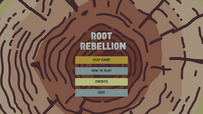
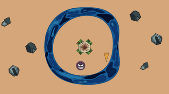
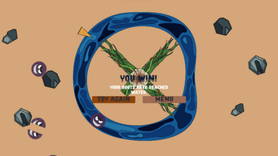

Root Rebellion
A nature theme point-defense game
One of the first digital game I ever made. This game was made for the Global Game Jam in 2023. The theme for the jam was "Roots".
In Root Rebellion, players dash through enemies to defend their roots. players must prioritise which roots they defend as they will quickly get overwhelmed when trying to slice through all of the enemies. Playing with a controller is recommended.


